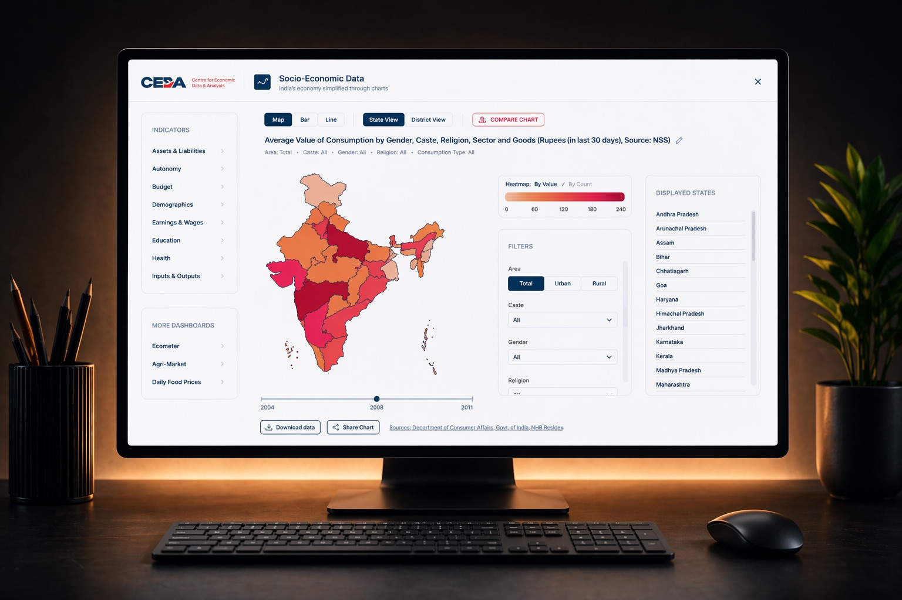
Making public economic data legible
CEDA brought me back to redesign the flagship of their dashboard suite: a socio-economic data portal that only researchers could navigate, rebuilt so any curious citizen could read, compare, and share a chart in seconds.
Outcome data: CEDA runs no logins or analytics on its public dashboards, so I have no adoption numbers to show and will not invent any. Chapter 06 covers what I would have measured, and the one outcome that is publicly verifiable.
The Center for Economic Data & Analysis (CEDA) at Ashoka University publishes socio-economic data to inform public debate about India. The Socio-Economic Data Portal (SEDP) is the flagship of their dashboard suite. After I redesigned two of their earlier dashboards, Ecometer and Agrimarket, CEDA brought me back for the one that mattered most.
The job was not a fresh coat of paint. It was to take data that only a handful of researchers could navigate and make it legible to any curious citizen, then let those charts travel beyond the dashboard.
The old portal, if you already knew how it worked
The existing portal functioned, but only for someone who had already learned it. It was built by economists for economists, and it showed. It asked every visitor to absorb its vocabulary and its controls before it would show them a single chart, which is why its audience never grew past a handful of academics.
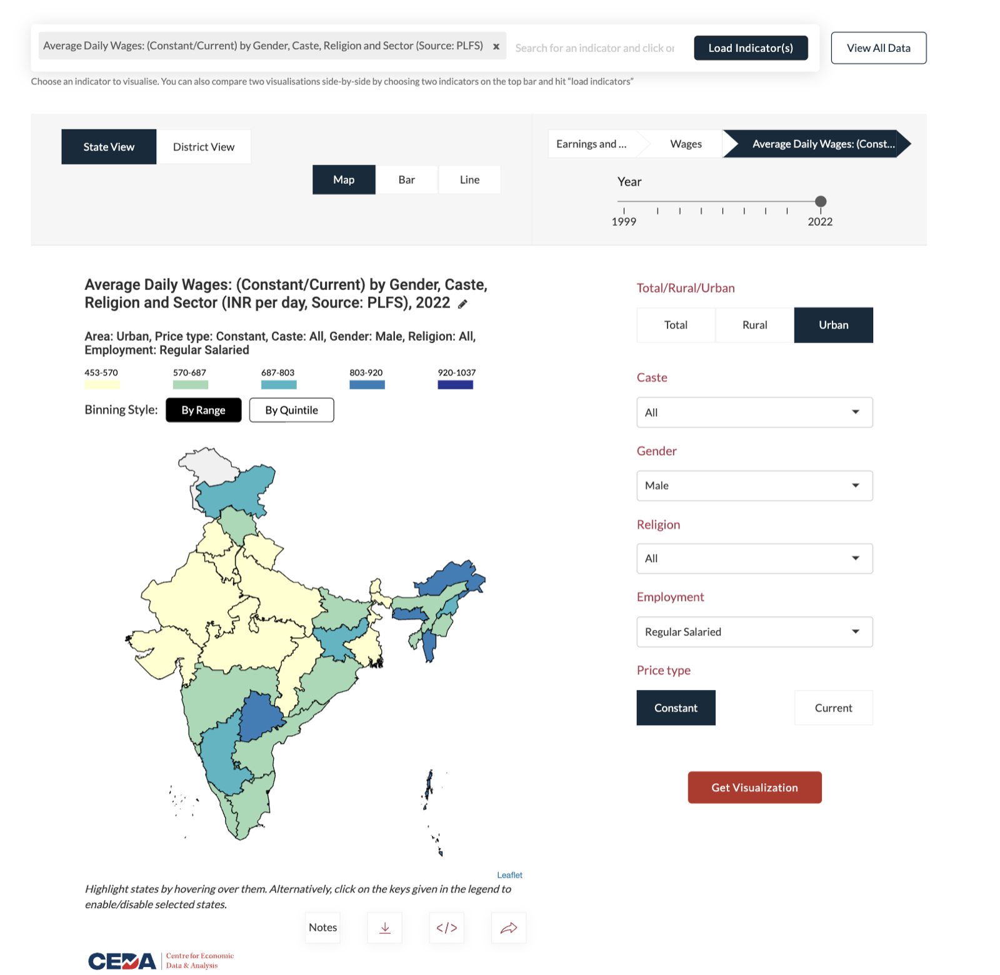
- F-01The chart lived below the fold. The one thing people came for, the visualization, sat beneath a wall of filters and controls.
- F-02The language was academic. Controls read “Binning” and “Quintile,” terms that mean nothing to a general reader.
- F-03The year slider was detached. The timeline sat far from the map it controlled, so cause and effect were hard to connect.
- F-04The palette was arbitrary. Colours were chosen ad hoc and ignored CEDA’s brand entirely.
- F-05Nothing rendered on its own. You had to load an indicator and press “Get Visualization” before a single chart appeared.
If a reader has to learn the interface before they can read the data, the data has already lost them.
The brief & the constraints
CEDA was explicit about what they wanted. The brief came as four goals:
- Reduce complexity and make the dashboards genuinely intuitive.
- Make the visual language consistent across all their dashboards.
- Make them clean, modern, and worth looking at.
- Grow the audience by making charts easy to share on social media.
Those goals had to be met inside a fixed set of constraints:
- C-01One system, three dashboards. Whatever I designed had to hold across SEDP, Ecometer, and Agrimarket without fragmenting.
- C-02CEDA’s existing brand. The identity was locked; the new interface had to live inside it.
- C-03A two-developer build. Every idea had to be something two engineers could realistically ship and maintain.
- C-04A public portal, no login. Open access by design, which also meant no accounts and no analytics to measure against.
One screen, no scrolling
I rebuilt SEDP as a single, non-scrolling screen. Everything a reader needs, the visualization, its legend, the selectors, and the compare action, sits in one organized layout. The map is the default view, so the first thing you see is data, not a form to fill in.
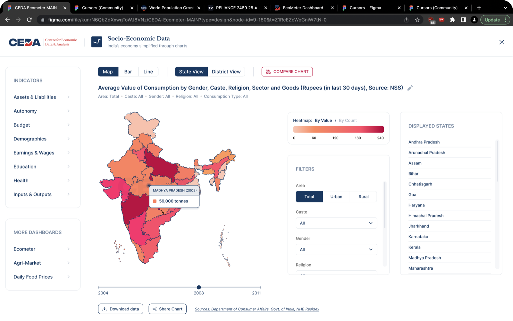
Under that single layout, four specific decisions did the heavy lifting. Each one takes a point of friction from the old portal and removes it.
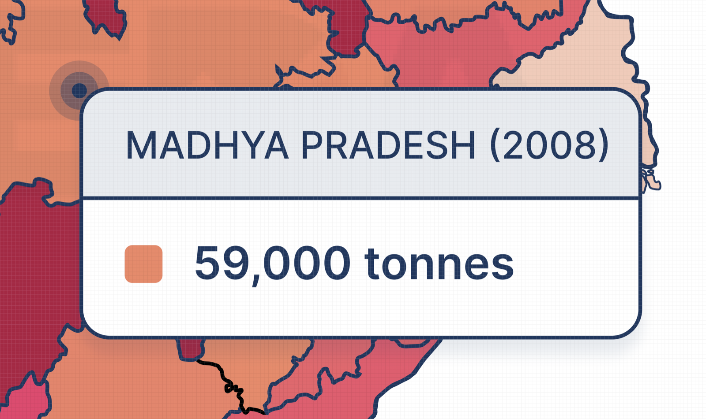
Fig. 03Rich hover tooltips. State, year, and value on hover.
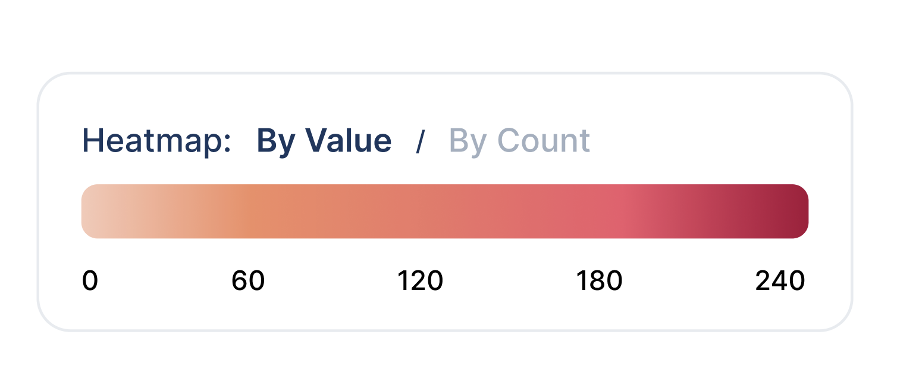
Fig. 04Brand-tied heatmap. Recoloured to CEDA’s palette, legible at a glance.
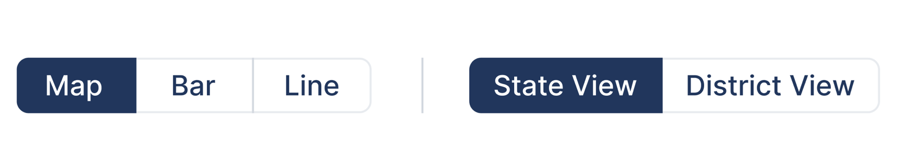
Fig. 05One action row. Chart type and geography selectors, standardized together.
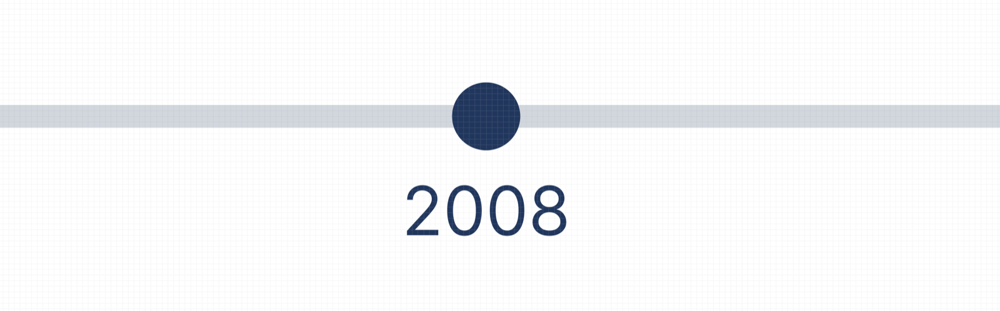
Fig. 06Reattached timeline. The year slider now sits directly under the chart it drives.
Compare is the product
The feature that turned SEDP from a lookup tool into an analysis tool was comparison. A citizen rarely wants a single number in isolation. They want to know how their state stacks up against another, or how one indicator moves against a second. That meant two things had to be genuinely easy: finding a chart, and reading two of them at once.
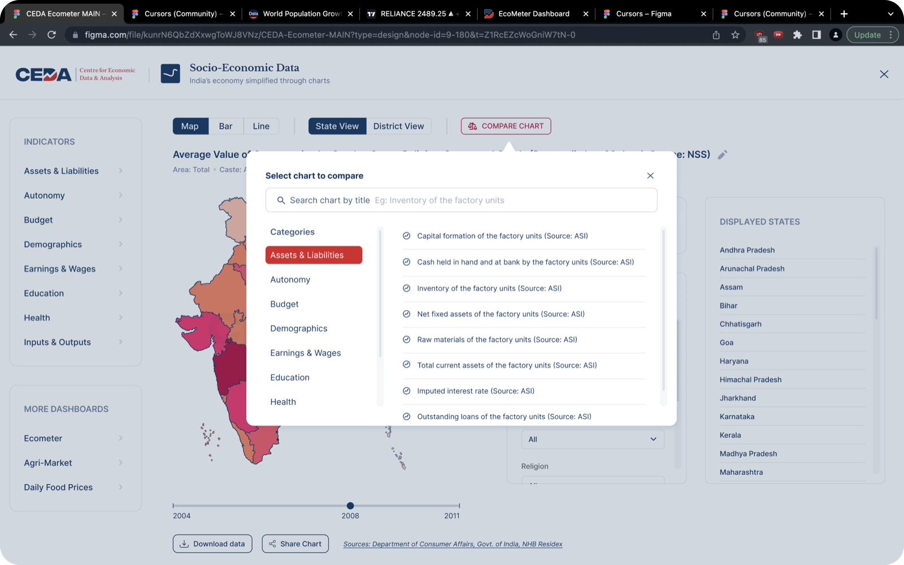
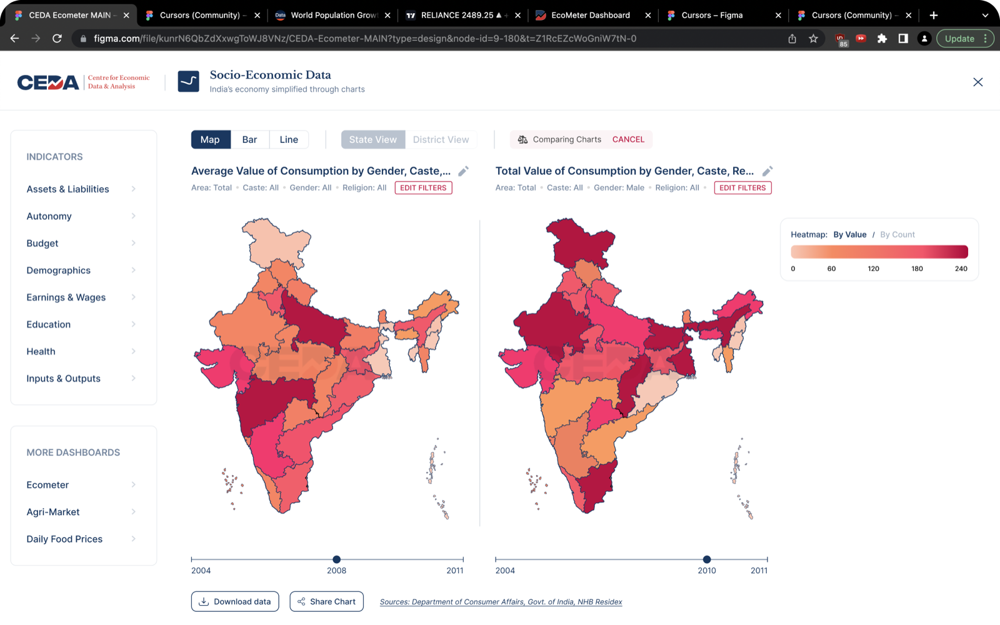
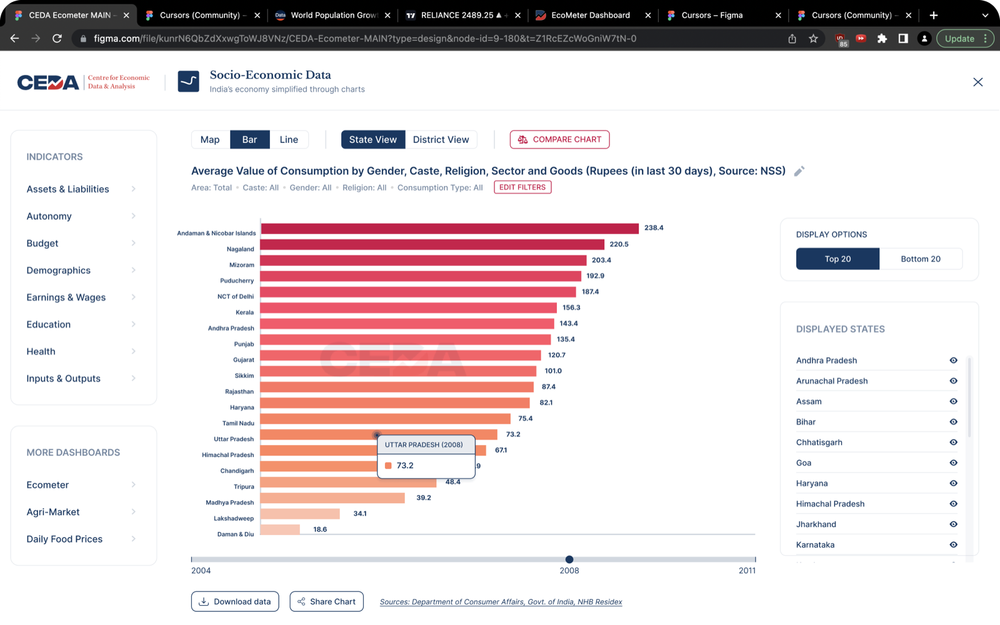
A chart that cannot leave the dashboard cannot grow its audience.
From destination to distribution
The fourth goal was reach. A dashboard people have to seek out will only ever be found by people already looking. So I designed two things: a front door for newcomers, and a way for the charts to walk out on their own.
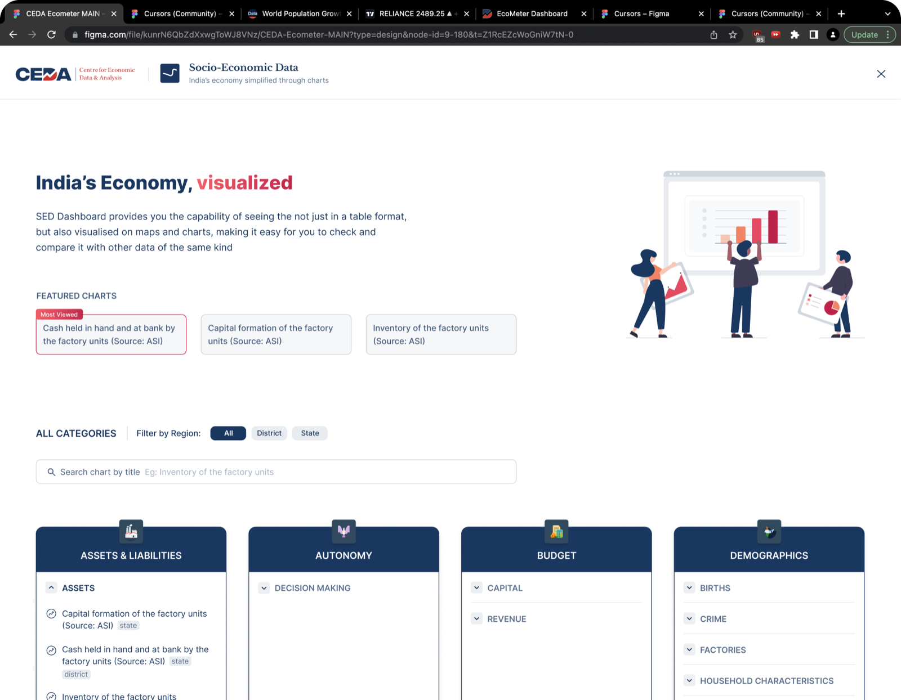
A chart built to be shared
CEDA wanted their charts to travel. I designed a 1:1 share template for all three chart types, auto-generated on tap and sized for any social platform. The key move was making each image self-contained: a shared chart carries its own headline readout, so it makes sense even to someone who never opens the portal.
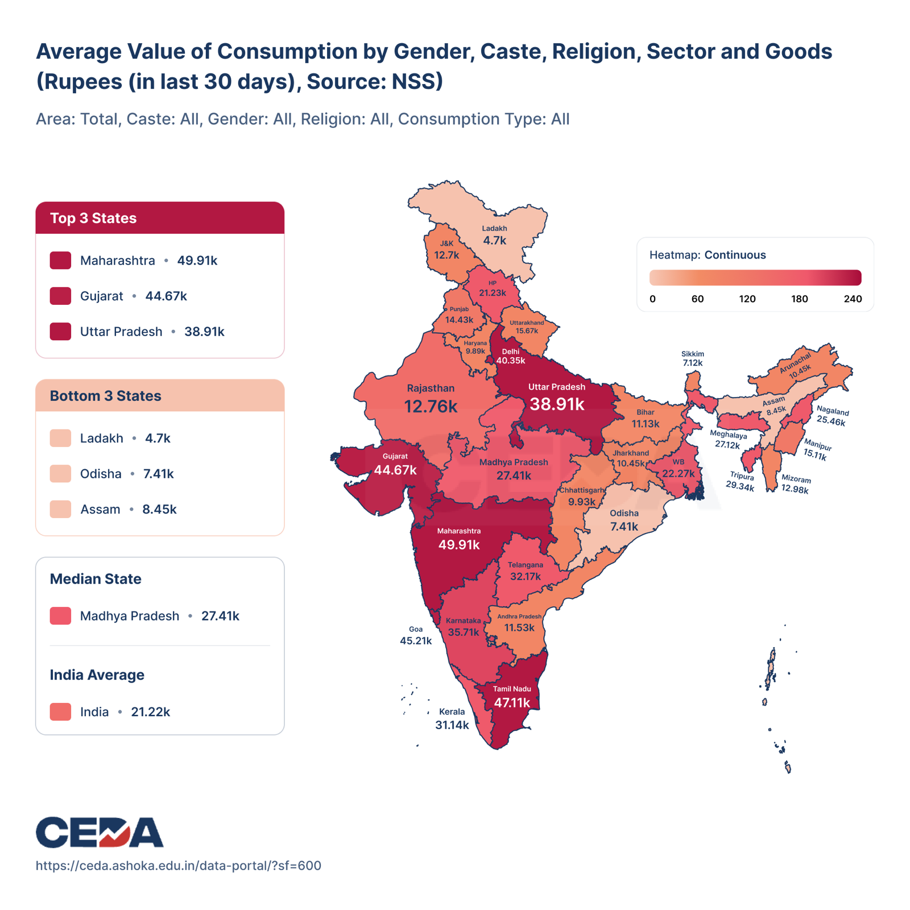
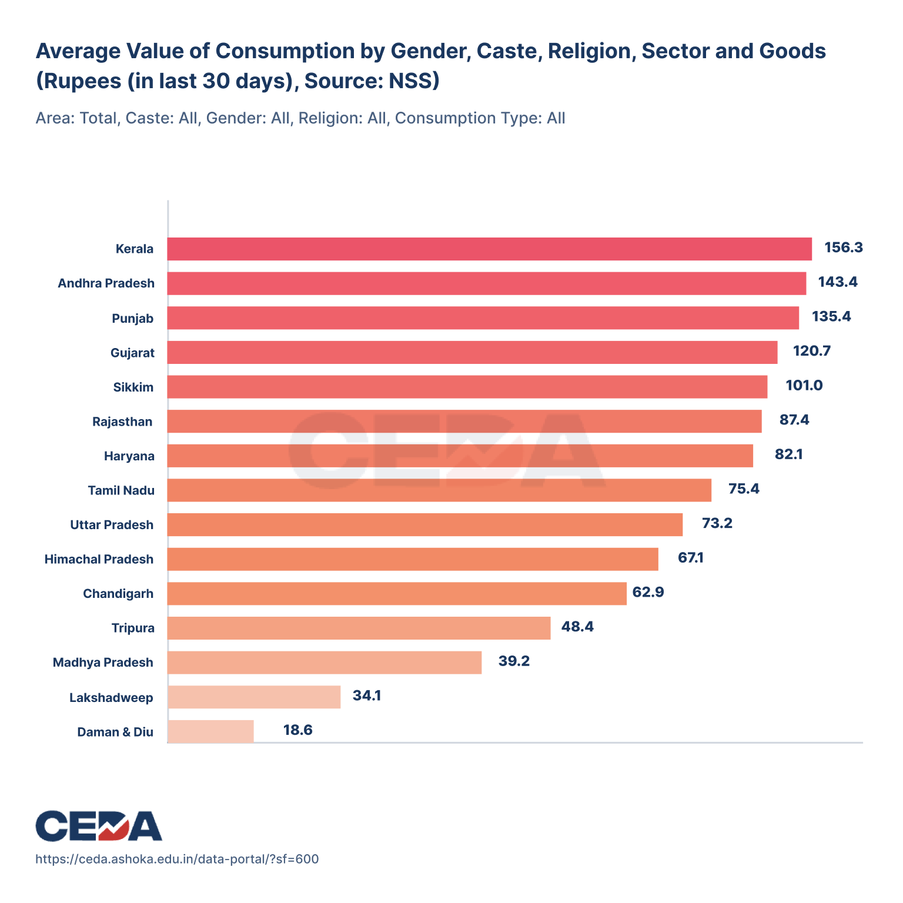
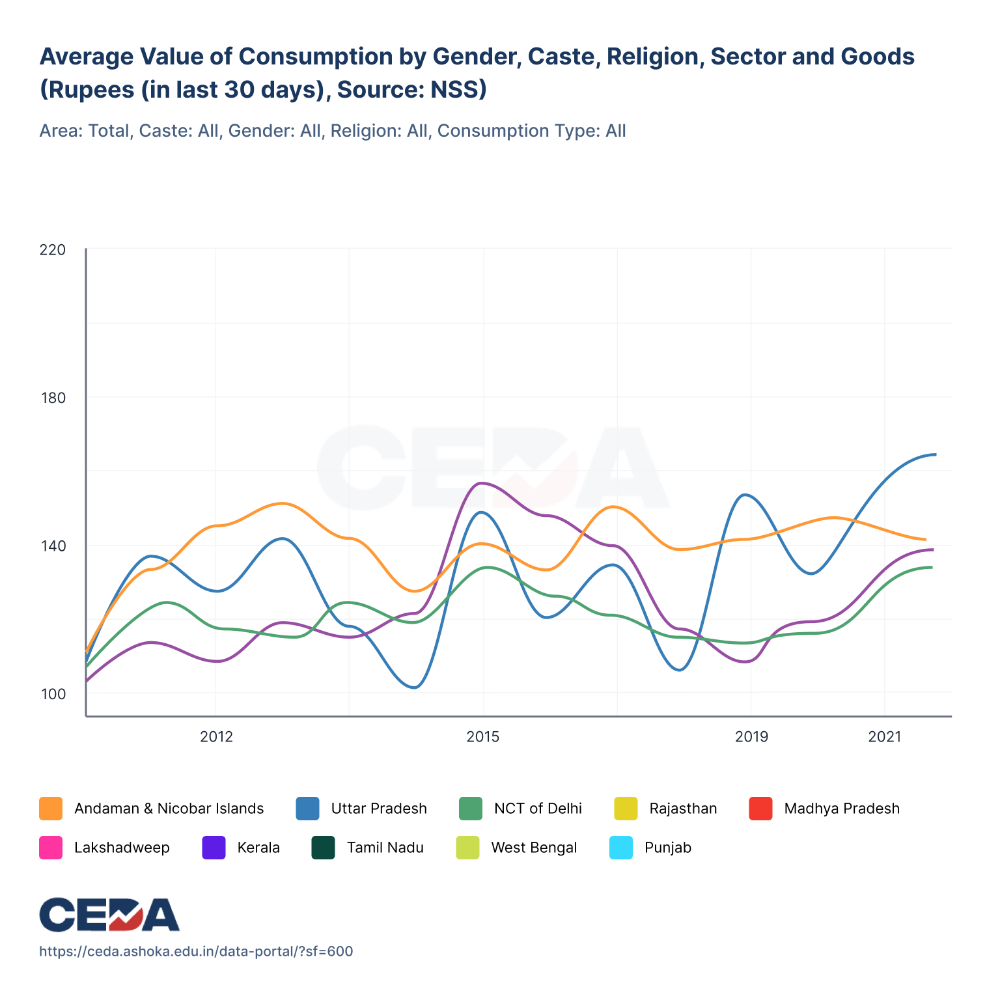
This is the one outcome I can point to directly. CEDA’s team still reaches for the share feature regularly, and the auto-generated images show up across their social channels well after launch.
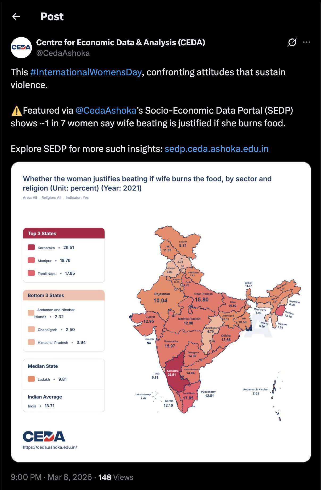
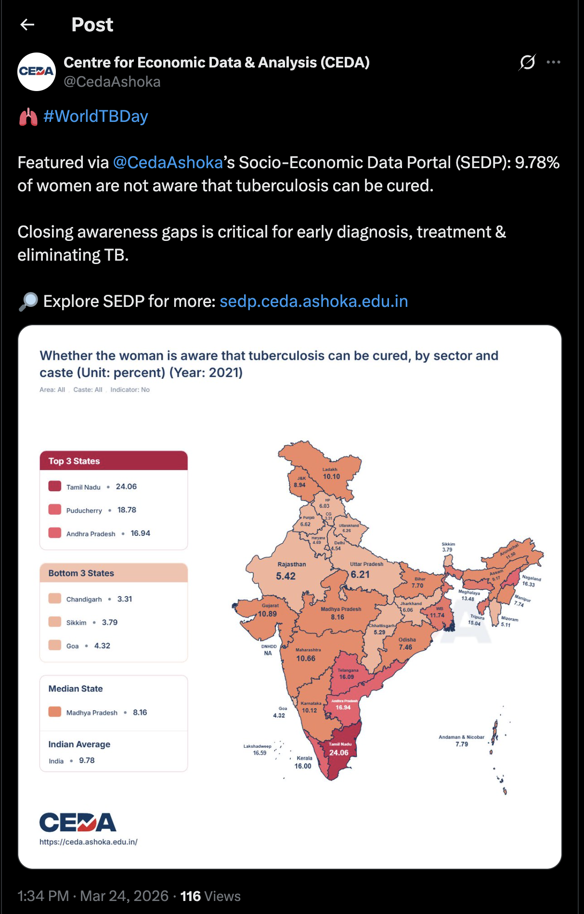
An honest scorecard
CEDA runs no logins or analytics on its public dashboards, so I have no adoption or retention figures, and I will not manufacture any. Here is what shipped, what I would have measured, and what I would change.
Shipped
- SEDP redesign: single-screen map, bar, and line views
- State and district geography, with a compare mode
- Searchable landing page with themed browsing
- 1:1 social share templates for all 3 chart types
- One visual system extended across 3 dashboards
What I’d measure
- Time from landing to first chart viewed
- Share clicks per session, and the reach of shared images
- Search success rate inside the compare modal
- Return visits arriving from social referrals
- Drop-off on the old “Get Visualization” step, before vs. after
What I’d do differently
- Usability-test the compare flow with non-experts, not just faculty
- Instrument the share feature from day one to prove the reach
- Pressure-test the heatmap and tooltip for colour-blind readers
- Design the empty and error states for indicators with missing data
“We hired Priyank to redesign our dated suite of economic dashboards. And he did an excellent job. The redesigned dashboards are a treat to interact with. We will definitely be working with him again.”Akshi ChawlaEx-Director, CEDA, Ashoka University
This redesign was part of a wider effort across three of CEDA’s dashboards. The other two are documented in the Ecometer & Agrimarket case study.
Fin.